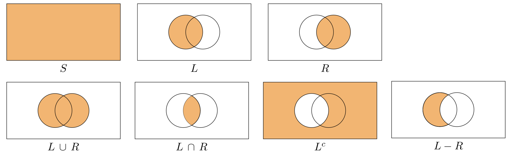
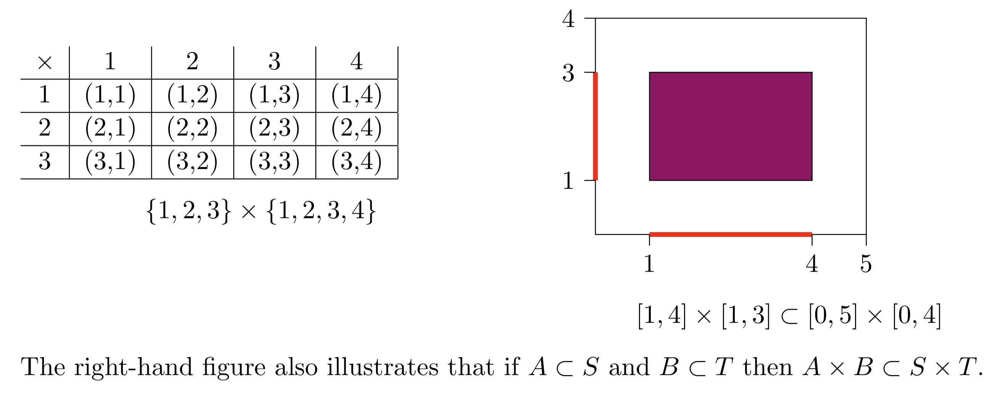
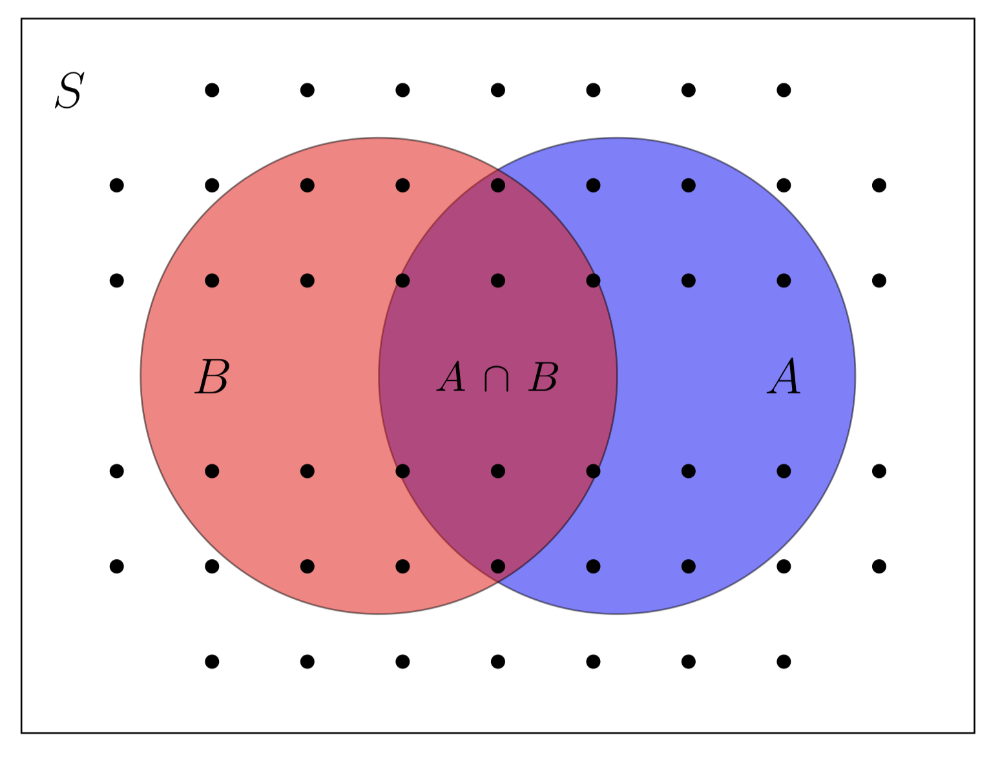
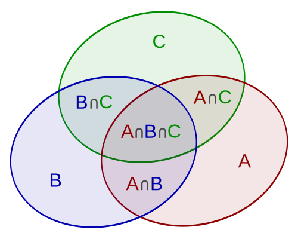

4.1 Introduction
4.1.1 Logic
Logic operations include any operations that manipulate Boolean values. Boolean values are either true or false. They are named after English mathematician George Boole, who invented Boolean algebra, and is widely considered the founder of computer science theory. They can also be represented as 1 and 0. Normally, 1 represents true, and 0 represents false, but it could be the other way around.
The basic Boolean operators are and (\(\wedge\)), or (\(\vee\)), not (\(\sim\)), implication (\(\Longrightarrow\)), and equivalence (\(\Longleftrightarrow\)).
- Given two Boolean variables A and B, the Boolean expression \(A \wedge B\) is true only if both A and B are true.
- \(A \vee B\) is true if either A or B is true, including the case when both are true.
- Not A is true when A is false, and vice-versa.
- The material conditional (also known as implication, or conditional) is a logical connective (or a binary operator) that is often symbolized by a forward arrow “\(\Longrightarrow\)”. The material conditional is used to form statements of the form p → q (termed a conditional statement) which is read as “if p then q”. Unlike the English construction “if … then …”, the material conditional statement \(p \Longrightarrow q\) does not conventionally specify a causal relationship between p and q; It merely means “if p is true then q is also true”, such that the statement \(p \Longrightarrow q\) is false only when p is true and q is false.
4.1.1.1 Boolean Operators
Boolean symbols are useful for brevity and precision, just like arithmetic symbols. If
\(p\) denotes “I like chocolate”
\(q\) denotes “I like ice cream”
then
\(p \wedge q\) means “\(p\) and \(q\)” (I like chocolate and I like ice cream). True iff \(p\) and \(q\) are both true.
\(p \vee q\) means “\(p\) or \(q\).” True iff one or both of \(p\) and \(q\) is true. Not an exclusive or. (How could I formulate exclusive or?)
\(p \implies q\) means “\(p\) implies \(q\)” or “if \(p\) then \(q\)” (If I like chocolate, then I like ice cream). True iff \(p\) being true makes \(q\) true.
note: \(p\implies q\) is also true when \(p\) is false!
\(p \iff q\)
4.1.1.2 Predicates
Predicates are similar to propositions but they depend on variables. \(P(x,y,z)\) denotes a predicate on variables \(x,y,z\). For example, define:
\(R(x)\): \(x\) is an odd number
\(Q(x)\): \(x > 2\)
\(P(x)\): \(x\) is a prime number
These predicates are not propositions, because they can be true or false depending on \(x\). They are like functions from variables to truth values.
\(P(2)\) is true
\(R(2)\) is false
\(P(4) \vee R(3)\) is true
\(Q(3) \wedge R(4)\) is false
\(Q(1) \implies R(2)\) is true.
4.1.1.3 Quantifiers
Many propositions assert that something is true for all or some elements of a given domain (e.g., all numbers). Let’s agree in advance on a universe of discourse.
“\(\forall\)” means “for all.” \(\forall x P(x)\) is a statement that is true if \(P(x)\) is true for every \(x\) in the universe of discourse.
“\(\exists\)” means “there exists.” \(\exists x P(x)\) is true if \(P(x)\) is true for at least one \(x\) in the universe of discourse.
“\(\exists !\)” means “there exists exactly one.”
“\(\forall x \in S\)” means “for every \(x\) in the set \(S\).” \((\forall x \in S) P(x)\) is equivalent to \((\forall x) (x \in S \implies P(x)).\)
Quantifies can turn predicates into propositions, e.g. \[\forall x, P(x) \wedge Q(x) \implies R(x)\] This expression is a (true) proposition, because the variable in the predicates is bound.
\(\forall x \exists y\) is different from \(\exists y \forall x\):
\(S(x,y):\) student \(x\) falls asleep in class \(y\).
\(\forall y \exists x P(x,y):\) “In every class, some student will fall asleep”
\(\exists x \forall y P(x,y):\) “There exists a student who will fall asleep in every class.”
4.1.1.4 Axioms
Axioms are propositions that are assumed to be true.There doesn’t exist a proof that the axiom is true – you just start with a reasonable assumption. (“axiom” comes from Greek “to think worthy,” not “to be true”). It is not wrong to make assumptions (in fact, it is unavoidable), but to be rigorous you have to state your assumptions explicitly.
Some typical examples of axioms from various parts of mathematics:
If \(a=b\) and \(b=c\) then \(a=c\).
Euclidean geometry has an axiom: Given a line \(l\) and a point \(p\) not on \(l\), there is exactly one line through \(p\) parallel to \(l\). (Sometimes an axiom from one domain contradicts an axiom from another.)
Spherical geometry has an axiom contradicting Euclid’s: Given a line \(l\) and a point \(p\) not on \(l\), there is no line through \(p\) parallel to \(l\).
4.1.2 Sets
A set is a well-defined collection of objects. Each object in a set is called an element of the set.
Two sets are equal if they have exactly the same elements in them. A set that contains no elements is called a null set or an empty set.
If every element in Set A is also in Set B, then Set A is a subset of Set B.
Membership: If \(a\) is a member of a set A, we write \(a \in A\)
Sets of numbers:
- set of natural numbers \(N = \{0, 1, 2, 3, ... \}\),
- set of positive natural numbers \(N^+ = \{1, 2, 3, ... \}\),
- a set of integers \(Z = \{..., -2, -1, 0, 1, 2, 3, ... \}\),
- a set of rational numbers \(Q\), i.e. all numbers that can be represented as \(\frac{p}{q}\) for \(q \neq 0\),
- set of irrational numbers \(NQ\), i.e. all numbers that have infinite and non-periodic decimal expansion, e.g. number \(\pi \approx 3,141592...\), or a number indicated by a letter \(e \approx 2,718 ...\),
- set of real numbers \(R = Q + NQ\).
\(R\) can be expressed as an interval \((-\infty, \infty)\).
An interval is a set of real numbers with the property that any number that lies between two numbers in the set is also included in the set.
The interval of numbers between a and b, including a and b, is often denoted \([a, b]\). The two numbers are called the endpoints of the interval.
A singleton is a set with exactly one element.
CAUTION: Be sure you understand the difference between the outcome -8 and the event {−8}, which is the set consisting of the single outcome −8.
The cardinality (or size) of a collection or set \(A\), denoted \(|A|\), is the number of elements of the collection. This number may be finite or infinite.
A finite set is a set that has a finite number of elements. In other words, it is either
an empty set,
a singleton, or
a set whose elements can be listed in the form \({a1, a2, . . . , an}\) for some \(n \in N\).
A set that is not finite is called infinite. These sets have more than \(n\) elements for any integer \(n\).
Whether finite or infinite, the elements of a countable set can always be counted one at a time and, although the counting may never finish, every element of the set is associated with a natural number. Countable sets form the foundation of a branch of mathematics called discrete mathematics.
A set that is not countable is called uncountable set (or uncountably infinite set). It contains too many elements to be countable, e.g. an interval with positive length: \([0, 1]\).
Table 1.1. The terminology of set theory and probability theory
| Set Theory | Probability Theory |
|---|---|
| Set | Event |
| Universal set | Sample space |
| Element | Outcome |
Table 1.2. Probability event language
| - | Event language |
|---|---|
| \(A\) | A occurs |
| \(A^c\) | A does not occur |
| \(A \cup B\) | Either A or B occur |
| \(A \cap B\) | Both A and B occur |
4.1.3 Cardinality (Retrieved from Wikipedia.org)
In mathematics, the cardinality of a set is a measure of the “number of elements” of the set. For example, the set \(A=\{2,4,6\}\) contains 3 elements, and therefore A has a cardinality of 3. Beginning in the late 19th century, this concept was generalized to infinite sets, which allows one to distinguish between the different types of infinity, and to perform arithmetic on them. The cardinality of a set is also called its size, when no confusion with other notions of size is possible.
The cardinality of a set A is usually denoted \(\|A\|\), with a vertical bar on each side; this is the same notation as absolute value, and the meaning depends on context. The cardinality of a set A may alternatively be denoted by e.g. \(n(A)\), \(\#A\).
If the so-called axiom of choice holds, the law of trichotomy holds for cardinality:
- Any set X with cardinality less than that of the natural numbers is said to be a finite set.
- Any set X that has the same cardinality as the set of the natural numbers is said to be a countably infinite set.
- Any set X with cardinality greater than that of the natural numbers is said to be uncountable.
The difference between countable and uncountable sets is important for statistics and probability.
Because of the mathematics required to determine probabilities, probabilistic methods are divided into two distinct types, discrete and continuous. A discrete approach is used when the number of experimental outcomes is finite (or infinite but countable). A continuous approach is used when the outcomes are continuous (and therefore infinite). It will be important to keep in mind which case is under consideration since otherwise, certain paradoxes may result.
4.1.3.1 Remark
Do not confuse symbol \(\subseteq\) (to be a subset; can be also denoted as \(\subset\)) with the symbol \(\in\) (to be an element):
\(\subseteq\) \(\neq\) \(\in\)
\(\emptyset \subseteq \emptyset\),
but \(\emptyset \notin \emptyset\)
\(\emptyset \subseteq \{1,2,3,4,5\}\), \(\emptyset \notin \{1,2,3,4,5\}\)
\(\{3\} \subseteq \{1,2,3,4,5\}\), \(3 \nsubseteq \{1,2,3,4,5\}\),
but \(3 \in \{1,2,3,4,5\}\)
4.1.4 Sets - summary
A set is a collection of objects:
\(x \in S\) means “\(x\) is in the set \(S\)”
\(\emptyset\) is the empty set (contains no elements).
\(A \cap B\) means “the intersection of \(A\) and \(B\)” (the set of elements in both sets).
\(A \cup B\) means “the union of \(A\) and \(B\)” (elements in either set).
Set difference. \(A-B=\{x| x \in A, but x \not \in B\}\)
\(\subseteq\) or \(\subset\), subset.
\(=\), set equivalence.
4.1.5 Venn diagrams
Venn diagrams offer an easy way to visualize set operations. The big rectangle can represents the probability space \(\Omega\) or \(S\). The disks inside the rectangle can represent probability events \(A\), \(B\), etc.
Also, the following De Morgan’s laws may be useful: \[(A\cup B)^c=A^c \cap B^c \ \ \ \ \ {\rm and}\ \ \ \ \ (A\cap B)^c=A^c\cup B^c\]

In all the figures S is the region inside the large rectangle, L is the region inside the left circle and R is the region inside the right circle. The shaded region shows the set indicated underneath each figure.
The product of sets S and T is the set of ordered pairs: \(S×T = \{(s,t) | s∈S, t∈T\}\).
In words the right-hand side reads "the set of ordered pairs (s, t) such that s is in S and t is in T. The following diagrams show two examples of the set product.

The right-hand figure also illustrates that if \(A \subseteq S\) and \(B \subseteq T\) then \(A×B \subseteq S×T\).
If S is finite, we use |S| or #S to denote the number of elements of S.
4.1.5.1 Two useful counting principles are the inclusion-exclusion principle and the rule of product (discussed below in detail).
The inclusion-exclusion principle says \(|A \cup B| = |A| + |B| − |A \cap B|\).
We can illustrate this with a Venn diagram. S is all the dots, A is the dots in the blue circle, and B is the dots in the red circle.

\(|A|\) is the number of dots in A and likewise for the other sets. The figure shows that \(|A|+|B|\) double-counts \(|A \cap B|\), which is why \(|A \cap B|\) is subtracted off in the inclusion-exclusion formula.
The Rule of Product says: If there are n ways to perform action 1 and then by m ways to perform action 2, then there are n · m ways to perform action 1 followed by action 2. We will also call this the multiplication rule.
Example. If you have 3 shirts and 4 pants then you can make 3 · 4 = 12 outfits.
An extremely important point is that the rule of product holds even if the ways to perform action 2 depend on action 1, as long as the number of ways to perform action 2 is independent of action 1. To illustrate this: Example 6. There are 5 competitors in the 100m final at the Olympics. In how many ways can the gold, silver, and bronze medals be awarded?
Answer: There are 5 ways to award the gold. Once that is awarded there are 4 ways to award the silver and then 3 ways to award the bronze: answer 5 · 4 · 3 = 60 ways. Note that the choice of gold medallist affects who can win the silver, but the number of possible silver medallists is always four.
4.1.6 Basic counting principles
4.1.6.1 Injections, surjections and bijections
In mathematics, injections, surjections and bijections are classes of functions distinguished by the manner in which arguments (input expressions from the domain) and images (output expressions from the codomain) are related or mapped to each other.
The function is injective, or one-to-one, if each element of the codomain is mapped to by at most one element of the domain, or equivalently, if distinct elements of the domain map to distinct elements in the codomain.
The function is surjective, or onto, if each element of the codomain is mapped to by at least one element of the domain. That is, the image and the codomain of the function are equal.
The function is bijective (one-to-one and onto, one-to-one correspondence, or invertible) if each element of the codomain is mapped to by exactly one element of the domain. That is, the function is both injective and surjective. A bijective function is also called a bijection.
4.1.6.2 Sum
If \(A\) and \(B\) are disjoint, then \(|A \cup B| = |A| + |B|\).
Example. There are 99 math majors, 179 cs majors. How many majors are in math or cs (assume no double majors)? 99 + 179 = 278
Extend sum rule to any number of sets:
If \(A_1, \ldots, A_n\) are pairwise disjoint, then \(|A_1 \cup \ldots \cup A_n| = |A_1| + |A_2| + \ldots + |A_n|\).
Example. There are 99 math, 179 cs, 24 philosophy. Total in math or cs or philosophy = 302
4.1.6.3 Inclusion-Exclusion
What if the sets aren’t disjoint? E.g., math and cs majors, where some people are majoring in both? Consider two sets first.
If \(A\) and \(B\) are any sets (not necessarily disjoint), then \(|A \cup B| = |A| + |B|- |A \cap B|\).
Example. There are 99 math majors, 179 cs majors, 7 majoring in both.
How many majors are in math or cs?
Solution. 99 + 179 - 7 = 271
How many numbers in \(\{1,\ldots,100\}\) are divisible by \(2\) or \(5\)?
\(50\) divisible by \(2\)
\(20\) divisible by \(5\)
\(10\) divisible by both \(2\) and \(5\)
total: \(50+20-10=60\).
The inclusion-exclusion formula expresses the fact that the sum of the sizes of the two sets may be too large since some elements may be counted twice. The double-counted elements are those in the intersection of the two sets and the count is corrected by subtracting the size of the intersection.
Example. Suppose a survey of 100 people asks if they have a cat or dog as a pet. The results are as follows: 55 answered yes for cat, 58 answered yes for dog and 20 people checked yes for both cat and dog. How many people have a cat or a dog?
- Solution: Since 55 have a cat, and 58 have a dog, you may think at first that 55 + 58 = 113 have one or the other. That thinking overlooks that some people – 20 of them – have both, and we counted these people twice by adding 55 and 58. To correct our answer, we must subtract from that sum the number 20: 55 + 58 − 20 = 93 have a cat or a dog. This is an example of the inclusion-exclusion principle.
The I-E principle is more clearly seen in the case of three sets, which for the sets A, B and C is given by:
\(|A\cup B\cup C|=|A|+|B|+|C|-|A\cap B|-|A\cap C|-|B\cap C|+|A\cap B\cap C|\)

4.1.7 Product
If \(A\) and \(B\) are any sets, then \(| A \times B| = |A| \cdot |B|\).
Example. License plates – 3 letters followed by 3 digits: \(26 \times 26 \times 26 \times 10 \times 10 \times 10\).
Example. The power set. Number of subsets of \(n\)-element set (the power set of \(n\)-element set)? This is \(2^n\). Each subset corresponds to a bit string of length \(n\), with a \(1\) in position \(k\) meaning that the \(k\)th element is in the subset. That is, set of subsets has bijection to set of bit strings of length \(n\), which has \(2^n\) elements.
Example. Number of passwords – length \(8\), letters and digits, at least one letter.
First calculate number of length \(8\) strings of letters and digits, counting those with no letters: \(36^8\).
Then subtract those with no letters: \(26^8\).
The difference is what’s needed: \(36^8 - 26^8\).
Example. How many possible 4-digit PINs are there? This can be solved as 10 · 10 · 10 · 10 = 104 = 10, 000. So, there is a one in ten thousand chance that a robber can guess your pin code (randomly).
Let’s consider a stronger case where you must use each digit exactly once, so the PIN is exactly 10 digits long. How many such PINs exist?
Well, we have 10 choices for the first digit, 9 choices for the second digit, and so forth, until we only have 2 choices for the ninth digit, and 1 choice for the tenth digit. This means there are 362880 possible PINs in this scenario as follows:
\[10 \times 9 \times \ldots \times 2 \times 1 = \prod_{i = 1}^{n = 10} i = 362880\]
There is more general formula:
\[N! = N \times (N − 1) \times (N − 2) \times \ldots \times 3 \times 2 \times 1 = \prod_{j=1}^n j\]
\(N!\) is read as “N factorial”. It is important to note that \(0! = 1\) since there is one way to arrange 0 objects.
We know with absolute certainty that \(1!=1, (n = 1)\). Thus, we obtain the following:
We know that \(n! = n \times (n-1)!\), it follows that \(1! = 1 \times (1-1)!\), it follows that \(1! = 1 \times 0!\), thus, it must be \(0! = 1\).
For the equation to be true, we must force the value of zero factorial to equal 1. Otherwise, \(1! \neq 1\) which is a contradiction.
4.1.7.1 Complementary counting
Example. Suppose we are making a 10-digit PIN, but now at least one digit has to be repeated at least once. How many such PINs exist? Some examples of this PIN would be 1111111111, 01234556788, or 9876598765, but the list goes on! Let’s try our “normal” approach. If we try this, we’ll end up getting stuck. Consider placing the first digit - we have 10 choices. How many choices do we have for the second digit? Is this a repeated digit or not? We can try to find a product of counts of choices for each digit in different scenarios but this can become complicated as we move around which digits are repeated…
Another approach might be to count how many PINs don’t satisfy this property, and subtract it from the total number of PINs. This strategy is called complementary counting, as we are counting the size of the complement of the set of interest. The number of possible 10-digit PINs, with no stipulations, is 10^10 (from the product rule, multiplying 10 choices with itself for each of 10 positions).
Then, we found above that the 10-digit PINs with no repeats has 10! possibilities (each digit used exactly once). Well, consider that the 10-digit PINs with at least one repeat will be all other possibilities (they could have one, two, or more repeats but certainly won’t have none). This means that we can count this by taking the difference of all the possible 10-digit PINs and those with no repeats. That is: 10^10 − 10!
4.1.8 Division Rule
One last basic rule: division rule:
If there is a \(k\) to \(1\) mapping from \(A\) to \(B\), and \(|A| = n\), then \(|B| = n/k\).
How many subsets of size \(2\) are there, of a \(5\)-element set \(A\)?
Let \(S\) be this set of subsets.
First, consider set \(P\) of ordered pairs without repeats.
Have \(|P| = 5 \times 4\) (since can’t repeat).
There’s a \(2\) to \(1\) mapping from \(P\) to \(S\) – just ignore the order.
So \(S\) has \(20 / 2 = 10\) elements.
Example. How many different ways are there to seat four people around a circular table, where two seatings are considered the same when each person has the same left neighbor and the same right neighbor?
To solve this exercise we must first pick a random seat, and assign it to person 1, the rest of seats will be labeled in numerical order, in clockwise rotation around the table. There are 4 seats to choose from when we pick the first seat, 3 for the second, 2 for the third and just 1 option left for the last one. Thus there are 4! = 24 possible ways to seat them. However, since we only consider a different arrangement when they don’t have the same neighbours left and right, only 1 out of every 4 seat choices matter.
Because there are 4 ways to choose for seat 1, by the division rule (\(n/k\)) there are 24/4 = 6 different seating arrangements for 4 people around the table.
4.1.9 Permutations and Combinations
Some problems deal with the number of ways of choosing some particular number of elements from a set.
There are two different ways to select them: in a particular order (as a sequence), or just in an (unordered) set.
Selections are called permutations when we care about the order, and combinations when we don’t.
4.1.9.1 Choices: With or without replacement?
When you are choosing several things, can you choose the same thing more than once? If so, you are choosing with replacement.
Example: You buy bagels at a bakery. You can buy more than one blueberry bagel if you want. This is choosing with replacement.
Example: You select five players for a basketball team from a pool of 20 candidates. You can not pick the same person more than once. This is choosing without replacement.
4.1.9.2 Choices: Ordered or unordered?
When you are choosing several things, does the order in which you select them matter? If so, you are making an ordered choice.
Example: You select five players for a basketball team for a pickup game in the park. All five will run on the court together, without organizing positions. This is an unordered choice.
Example: You select five players for a basketball team for a formal game with fixed positions: center, power forward, small, forward, shooting guard, and point guard. This is an ordered choice.
4.1.10 Permutations without repetitions
An \(r\)-permutation (without repetition) of a set of \(n\) elements is an ordered arrangement of \(r\) of the \(n\) elements (all distinct).
\(S=\{A,B,C\}\).
The \(2\)-permutations are \((A,B),(B,A),(A,C),(C,A),(B,C),(C,B)\).
\(6\) \(2\)-permutations
How many \(r\)-permutations of a set of \(n\) elements?
\(n\) ways to choose first element
given first choice, \(n-1\) ways to choose second element
\(n-2\) to choose third
overall: \[n(n-1)\cdots(n-r+1) = \frac{n!}{(n-r)!}.\]
Denote this by \(P(n,r)\).
A permutation of \(n\) elements is an \(n\)-permutation of them.
\(P(n,n)=n!\)
How many ways can \(n\) people stand in a circle?
- Map each permutation to a ring.
- \(n\) permutations mapped to each ring.
- By division rule, number of rings is \(n!/n = (n-1)!\).
4.1.11 Combinations without repetitions
An \(r\)-combination (without repetition) of a set of \(n\) elements is an (unordered) subset of the \(n\) elements.
\(S=\{A,B,C\}\).
The \(2\)-combinations are \(\{A,B\},\{A,C\},\{B,C\}\).
\(3\) of them.
How many \(r\)-combinations of a set of \(n\) elements?
Map each \(r\)-permutation to an \(r\)-combination by ignoring the order.
How many \(r\)-permutations mapped to each \(r\)-combination? \(r!\) - because there are \(P(r,r) = r!\) permutations of a given \(r\)-combination.
By division rule, \(P(n,r)/r!\)
Denote this by \(C(n,r)\), or more commonly as \({n \choose r}\).
The number of \(r\)-combinations of an \(n\)-set is: \[{n \choose r} = \frac{n!}{r!(n-r)!}\]
\({n \choose r}\) is called a binomial coefficient for reasons that will become clear later.
How many ways can \(3\) distinct numbers be chosen from \(1,\ldots,10\)?
This is \({10 \choose 3} = \frac{10!}{3!7!} = 120\).
4.1.11.1 Useful properties of binomial coefficient
Above, we introduced the binomial coefficients \[{n \choose r} = \frac{n!}{r!(n-r)!}\]
These represent the number of ways to choose \(r\) elements from a set of \(n\) elements, where the order does not matter.
Combinations, as opposed to permutations, where the order does matter.
(There are \[\frac{n!}{(n-r)!}\] of those.)
Let \(n\) and \(r\) be naturals, \(0 \leq r \leq n\).
Then \[{n \choose r} = \frac{n!}{r!(n-r)!}.\]
Special cases:
\[{n \choose 1} = n\] \[{n \choose 0} = 1\] (uses the convention that \(0! = 1\)),
\[{n \choose n} = 1\] (note symmetry with previous),
\[{n \choose n-1} = n\] (symmetry).
There are infinitely many interesting identities involving binomial coefficients, e.g.:
Suppose \(0 \leq r \leq n\).
Then \[{n \choose r} = {n \choose n-r}.\]
4.1.12 Permutations with repetitions
Recall that an \(r\)-permutation of a set of \(n\) elements is a sequence of length \(r\) of distinct elements.
An \(r\)-permutation of a set of \(n\) elements allowing repetitions is a sequence of \(r\) elements, each chosen from the set. (Repeats allowed.)
Recall that the number of \(r\)-permutations without repetitions is \(\frac{n!}{(n-r)!}\).
The number of \(r\)-permutations with repetitions is \(n^r\).
By Product Rule.
How many strings of length \(10\), of letters A-M?
Same as number of \(10\)-permutations with repetitions allowed, of the set of letters A-M.
\(13^{10}\).
Given a bag containing \(5\) red balls and \(5\) blue balls.
Experiment involves picking a sequence of \(4\) balls (without replacement).
How many different color sequences are possible?
This is easy – just the number of \(4\)-permutations of the set of \(2\) elements (red, blue),
which is \(2^4\).
It doesn’t matter here how many red and blue balls there are – just matters that there are more than \(4\).
Really the unlimited case.
4.1.13 Combinations with repetitions
Now we move from permutations with repetition to combinations with repetition. Let \(S\) be the set \(\{ A, B, C \}\). This set has three 2-combinations. That is, there are three ways to choose two distinct elements of \(S\) where order does not matter. The three 2-combinations of \(S\) are shown below.
\[\{\{ A, B \}, \{ A, C \}, \{ B, C \}\}\]
Suppose that we are not required to choose distinct elements of \(S\), but rather can choose the same element repeatedly. The resulting sets are called the \(r\)-combinations with repetition of the set \(S\). Listed below are the six \(2\)-combinations with repetition of \(S\).
\[\{\{ A, B \}, \{ A, C \}, \{ B, C \}, \{ A, A \}, \{ B, B \}, \{ C, C \}\}\]
Strictly speaking, these are multisets (bags), not sets, since an element may appear multiple times.
4.1.13.1 Counting \(r\)-Combinations with Repetition
The following theorem gives a nice formula for the number of \(r\)-combinations with repetition of an \(n\)-element set.
The number of \(r\)-combinations with repetition of an \(n\)-element set is
\[\binom{n + r - 1}{r}.\]
In the example above, we found six ways to choose two elements from the set \(S = \{ A, B, C \}\) with repetition allowed. Sure enough, the theorem says that the number of 2-combinations of a 3-element set is \(\binom{3 + 2 - 1}{2} = 6\).
For comparison, recall that the number of ordinary \(r\)-combinations of an \(n\)-element set is \(\binom{n}{r}\). Every ordinary \(r\)-combination is also a valid \(r\)-combination with repetition. So, as one would expect, the number of \(r\)-combinations with repetition is greater if \(r > 1\).
4.1.13.2 Why is this calculation accurate?
Understand it by a thought experiment:
Represent each combination concisely by a string of stars and bars.
E.g., \(3R-2B\) is: ***|**|
\(1R-3B-1G\) is: *|***|*
The two bars are like dividers between compartments, the stars represent how many of each color.
In order, red, blue, green.
Every combination has a unique representation as a string of \(5\) stars and \(2\) bars, and every string of \(5\) stars and \(2\) bars represents a combination.
So enough to count the number of different strings of \(5\) stars and \(2\) bars.
This is \({7 \choose 2} = {7 \choose 5} = 21\). Think of choosing the positions representing the stars (or bars).
How many ways to choose 12 doughnuts from 21 varieties?
This is a combination problem – order doesn’t matter.
Allows repetitions.
So it’s asking for the number of \(12\)-combinations of a \(21\)-set, with repetitions allowed.
Formula says \({21 + 12 - 1 \choose 12} = ???\).
Intuitively, see in terms of \(20\) bars and \(12\) stars.
Now an equivalent problem – counting the number of ways of putting \(r\) indistinguishable balls into \(n\) (distinguishable) baskets.
To see the equivalence, think of the doughnut problem as putting \(12\) indistinguishable “doughnut requests” into the \(21\) doughnut bins.
Given \(n\) baskets in an amusement park arcade game, \(r\) balls (all same), how many different results can you get by throwing the balls into the baskets?
Again, the number of \(r\)-combinations of \(n\) elements.
Can see this by corresponding each result with a pattern of \(r\) stars and \(n-1\) bars.
\({n + r - 1 \choose r}\)
Another equivalent problem:
Counting the number of ways to build up a number by addition:
In how many ways can a positive integer \(r\) be written as the sum of exactly \(n\) nonnegative integers, where the order matters?
E.g., write \(7\) as sum of at most \(3\) positive integers:
\(7 + 0 + 0\), \(0 + 7 + 0\), \(0 + 0 + 7\),
\(6 + 1 + 0\), etc.
\(5 + 2 + 0\), etc.
Again, the number of \(r\)-combinations of \(n\) elements.
Can see this by corresponding each sum with a pattern of \(r\) stars and \(n-1\) bars.
The bars are the \(+\) signs, the stars are the units being counted.
Here, \({7 + 3 - 1 \choose 7} = {9 \choose 7} = 36\).
4.1.14 Permutations and Combinations with Bounded Repetition
4.1.14.1 Combinations (*)
So far, these \(r\)-combination problems all allowed arbitrary numbers of occurrences of each element of the set.
(Arbitrary number of balls in each basket, arbitrary number for each summation term.)
Can also consider variations in which there are constraints on the number of occurrences of each element.
Start with some lower bounds:
In how many ways can \(7\) be written as the sum of exactly \(3\) positive integers (that is, no zeros)?
In terms of stars and bars, there are \(7\) stars and \(2\) bars, as before, only now there must be at least one star in each compartment.
We can just eliminate consideration of \(3\) stars – their position is determined.
What’s left is distributing the remaining \(4\) stars into the \(3\) compartments, which is \({4 + 3 - 1 \choose 4} = {6 \choose 4} = 15\).
In general, to write \(r\) as sum of \(n\) positive integers (where order matters), where \(r \geq n\),
have \[{(r-n) + (n-1) \choose r-n} = {r-1 \choose r-n} = {r-1 \choose n-1}.\]
Express this as another theorem:
The number of \(r\)-combinations of \(n\) elements, allowing repetitions, and where each element occurs at least once, is \[{r-1 \choose n-1}.\]
Same thing here:
Given \(n\) baskets in arcade, \(r\) balls, how many different results in which each basket has at least one ball?
This is number of \(r\)-combinations of \(n\) elements in which each element is represented at least once, which is \[{r-1 \choose n-1}.\]
Generalize this to other constraints:
Arcade, \(n\) baskets, \(r\) balls, but now basket \(i\) has to have at least \(b_i\) balls.
Just subtract off the number that are already assigned to baskets, that is, \(b = \Sigma_i b_i\), and allocate the rest to the \(n\) baskets.
So, the number of \((r-b)\)-combinations of \(n\) elements, which is \({r - b + n - 1 \choose r-b} = {r-b+n-1 \choose n-1}\).
The number of \(r\)-combinations of \(n\) elements, with repetitions, and where each element \(i\) occurs at least \(b_i\) times, is \[{r-b+n-1 \choose r-b} = {r-b+n-1 \choose n-1},\] where \(b = \Sigma_i b_i\).
The following examples use these ideas:
In how many ways can the \(2n+1\) seats in a congress be divided among three parties so that any two parties can form a majority?
(Not distinguishing the individuals here – just the combinations of numbers.)
To compute this number, we first compute the number of all assignments of the seats to the parties, without any restrictions. This is the number of \(2n+1\)-combinations of \(3\) objects (parties) allowing repetitions:
\[{3 + (2n+1) - 1 \choose 2n+1} = {2n+3 \choose 2n+1} = {2n+3 \choose
2}.\]
Second, we compute the number of wrong distributions, i.e., when there is a party with at least \(n+1\) seats.
We have three choices for this unique party, then we can give it \(n+1\) seats and distribute the remaining n seats in \[{3 + n - 1 \choose 2} = {n+2 \choose 2}\] ways.
Thus the number of wrong distributions is \(3{n+2 \choose 2}\), so the number of good distributions is \[{2n+3 \choose 2} - 3{n+2 \choose 2} =
\frac{n(n+1)}{2} = {n+1 \choose 2}.\]
4.1.14.2 Permutations (*)
One last topic – permutations of elements allowing repeats, with bounds.
The general problem is:
Given \(n\) elements, with upper and/or lower bounds on number of times to use each,
how many different \(r\)-permutations are there?
Simplest case:
Where each of the \(n\) elements has exact bounds – we’re told exactly how many to use of each.
This only makes sense when \(r\) is equal to the sum of the bounds.
This is the only case we will work out in this course.
\(n=3\); the elements are the letters P, E, R.
The bounds are: \(P-3\), \(E-2\), \(R-1\).
\(r=6\).
How many permutations?
Same as asking how many permutations of the word PEPPER.
To analyze, subscript each letter to make them distinct, yielding \(P_1,P_2,P_3,E_1,E_2,R_1\).
This set has \(6!\) permutations.
However, by mapping all the \(P_i\) to \(P\) and all the \(E_i\) to \(E\), we get a \(3! 2!:1\) mapping.
So by rule of division, we see that the correct number of distinct permutations of PEPPER is \(\frac{6!}{3! 2!}\).
The question is the same as asking for the number of permutations of a particular multiset.
Let \(S\) be a multiset with finite repetition counts \(b_1,b_2,\ldots b_n\), where \(b_1+b_2+\ldots +b_n = r = |S|\).
Then the number of permutations of \(S\) is \[\frac{r!}{b_1!b_2!\cdots b_n!}.\]